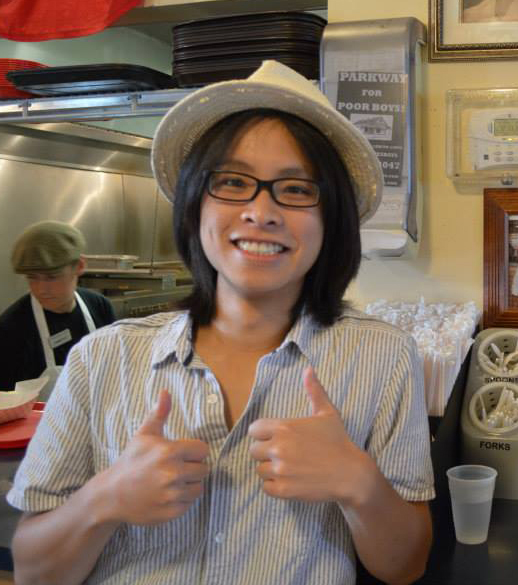

I recently co-founded Cosign AI with my friends, Riya and Louie. We are revolutionizing healthcare delivery by super-charging doctors with cutting-edge AI so they can do their best work. We're excited to share more about our progress soon!
The first chapter of my career was spent building robots of the road (aka self-driving cars as some call them). I worked on open-ended computer vision problems at Waymo (formerly the Google Self-Driving Car Project), helping to scale self-driving capabilities to multiple cities. Prior to that, I spent four fun and exciting years at Cruise, addressing the perception challenge, which led to the first urban robotaxi deployment in the US without a safety driver. My main focus was on real-time 3D object detection and segmentation. I earned my Master's in Computer Science focused on Artificial Intelligence from UT Austin. I received my Bachelor's in Electrical and Computer Engineering from Rice University. I am passionate about intelligent robots, computer vision, machine learning, and integrating them into everyday life.
In the past, I served as a research assistant in Dr. Peter Stone's Building-Wide Intelligence lab, Dr. James McLurkin's Multi-Robot Systems Lab, and at the MIT Lincoln Laboratory. My projects included grounding natural language to visual features of everyday objects, creating a software system that combines detection, tracking, and object recognition in videos, implementing firmware and an API for a unique robotics gripper, and devising a remote, hands-free bootloader that allows robots to wirelessly program a group of other robots. In addition to my research, I served as a graduate teaching assistant for machine learning, operating systems, and software engineering courses. I also co-organized the Forum for Artificial Intelligence lecture series.
I have lived in California, Texas, Pennsylvania, Germany, and China. I lean towards minimalism and try to live my life with more intentionality. This frees myself from controllable distractions and allows me to focus on what truly matters. My passion lies in designing and building functional yet beautiful things, whether it's robotics and algorithms to enhance transportation safety or clean-looking 3D prints for everyday tools and items. I also enjoy tinkering with my '91 Miata, pushing its 1.6L naturally aspirated engine to its limits. When I have free time, I love traveling the world with my camera, capturing diverse cultures, lifestyles, and perspectives.